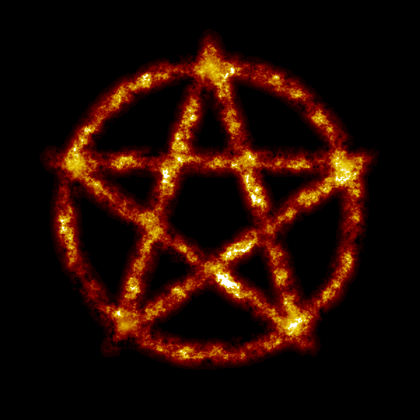

Okkultizmus 101
Az Okkultizmus101 egy magyar nyelvű, Wikipédiára alapuló weboldal. Okkultizmussal, ezotériával és vallásokkal foglalkozik. Az oldalt 2023. április 2.-án kezdte el fejleszteni Lucian, GitHubon hosztolva.
A weboldal lényege
A weboldal főleg a Wiki részlegére épül. Az oldal célja, hogy az olvasót spirituális dolgokról informálja, megvilágosítsa. Eme oldal szabadgondolkodó szemszögből próbálja megközelíteni a témákat, de a szerző saját tapasztalata és véleménye is megfogalmazódhat az adott tárgyról.